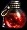
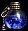
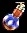
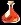
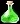
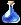
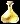
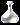
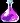

Diablo II Aragor trae consigo el uso de bolsas donde puedes almacenar tus gemas, supergemas y runas, en las ciudades principales encontrarás NPCs que venderan extractores y bolsas.
El funcionamiento es simple, para poder colocar una gema, supergema o runa en una bolsa, solo necesitas colocar la bolsa correspondiente y el item dentro del cubo horadrico y transmutar ambos
La bolsa "gemas" incluye: zafiro, esmeralda, topacio, amatista, diamante, rubi y craneo, en cualquier nivel
La bolsa "supergemas" incluye:
La bolsa "runas" incluye las runas: Hel, Eld, El, Tir, Nef, Eth, Ith, Tal, Ral, Ort, Thul, Amn, Sol, Shael, Dol, Io, Lum, Ko, Fal, Lem, Pul, Um, Mal, Ist, Gul, Vex, Ohm, Lo, Sur, Ber, Jah, Cham, Zod
La bolsa "runas nuevas" incluye las runas: Leo, Acu, Ari, Beta, Can, Cap, Mo, Sco, Es, Or, Noa, Frio, Fu, Ge, Ar, Libra, Ma, Mis, Oma, Ag, Piscis, Ke, Luz, Sagitarius, Ta, Tau, Umno, Ven, Vir, Win, Xilion, Yevon, Gor
Las bolsas pueden contener un maximo de 100 items por tipo de runa, gema o supergema
Para extraer los objetos de las bolsas, se utilizan extractores, estos pueden ser encontrados en las siguientes tiendas:
Acto I: Charsi y Gheed
Acto II: Lysander
Acto III: Alkor
Acto IV: Jamella y Halbu
El funcionamiento de la extracción se hace del siguiente modo: Colocar en el cubo horádrico la bolsa de gemas, supergemas o runas y junto a ella un extractor del tipo de item que queramos extraer y transmutar
Solo funcionara de un item en un item, no se puede extraer mas de un item simultaneamente
| Extractor | Items |
|  | Runas El, Eld, Tir, Nef, Eth, Ith, Tal, Ral, Ort, Thul, Amn |
|  | Runas Sol, Shael, Dol, Hel, Io, Lum, Ko, Fal, Lem, Pul, Um |
|  | Runas Mal, Ist, Gul, Vex, Ohm, Lo, Sur, Ber, Jah, Cham, Zod |
| Runas Mo, Cap, Can, Beta, Ari, Acu, Frio, Noa, Or, Es, Sco | |
| Runas Fu, Ge, Ar, Leo, Libra, Ma, Mis, Oma, Ag, Piscis, Ke | |
| Runas Luz, Sagitarius, Ta, Tau, Umno, Ven, Vir, Win, Xhilion, Yeven, Gor | |
|  | Rubi (Todos los Niveles) |
|  | Esmeralda (Todos los Niveles) |
|  | Zafiro (Todos los Niveles) |
|  | Topacio (Todos los Niveles) |
|  | Diamante (Todos los Niveles) |
|  | Amatista (Todos los Niveles) |
| Craneo (Todos los Niveles) |